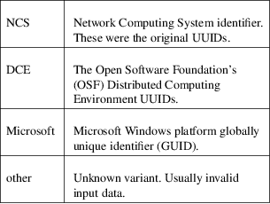
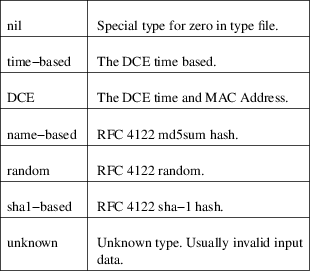

uuidparse − a utility to parse unique identifiers
uuidparse [options] uuid
This command will parse unique identifier inputs from either command line arguments or standard input. The inputs are white−space separated.
Variants

Types

−J, −−json
Use JSON output format.
−n, −−noheadings
Do not print a header line.
−o, −−output
Specify which output columns to print. Use −−help to get a list of all supported columns.
−r, −−raw
Use the raw output format.
−h, −−help
Display help text and exit.
−V, −−version
Print version and exit.
Sami Kerola <kerolasa@iki.fi>
uuidgen(1), libuuid(3), RFC 4122 <https://tools.ietf.org/html/rfc4122>
For bug reports, use the issue tracker at <https://github.com/util−linux/util−linux/issues>.
The uuidparse command is part of the util−linux package which can be downloaded from Linux Kernel Archive <https://www.kernel.org/pub/linux/utils/util−linux/>.